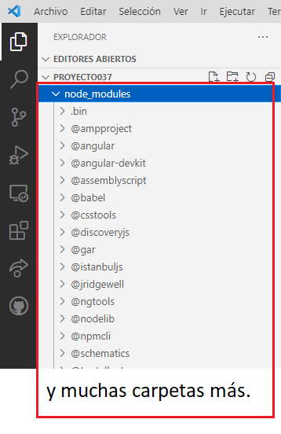

El framework de Angular, el gestor de línea de comandos Angular CLI y todas las componentes que implementamos y utilizamos de otros desarrolladores (por ejemplo Angular Material) son empaquetadas utilizando el software npm (node package manager - es el sistema de gestión de paquetes por defecto para Node.js y maneja las dependencias para una aplicación)
Los paquetes utilizando npm se descargan en la carpeta 'node_modules':
Por ejemplo en la versión 13 de Angular cuando creamos un proyecto tenemos en principio 605 carpetas que dependen directamente de la carpeta nodo_modules (y cada carpeta tiene subcarpetas) y a medida que instalemos otros recursos (por ejemplo Angular Material) esta cantidad crecerá.
Hay que tener bien en claro que todos estas carpetas no se instalarán en la aplicación web que desarrollemos, muchas son requeridas por el framework de Angular, otras para las pruebas de integración en Angular, otras para las pruebas unitarias etc.
Esta carpeta si la borramos completamente, la podemos recrear en forma exacta mediante el comando (nos tenemos que posicionar en la carpeta que contiene el archivo package.json):
npm install
Es por ello si tenemos que enviarnos el proyecto por email por ejemplo no es necesario incorporar todos los archivos de esta carpeta, ya que los podemos recrear.
El archivo 'package.json' que se encuentra en la carpeta raiz de nuestro proyecto es el que tiene la información de todos los paquetes requeridos:
{
"name": "proyecto037",
"version": "0.0.0",
"scripts": {
"ng": "ng",
"start": "ng serve",
"build": "ng build",
"watch": "ng build --watch --configuration development",
"test": "ng test"
},
"private": true,
"dependencies": {
"@angular/animations": "~13.0.0",
"@angular/common": "~13.0.0",
"@angular/compiler": "~13.0.0",
"@angular/core": "~13.0.0",
"@angular/forms": "~13.0.0",
"@angular/platform-browser": "~13.0.0",
"@angular/platform-browser-dynamic": "~13.0.0",
"@angular/router": "~13.0.0",
"rxjs": "~7.4.0",
"tslib": "^2.3.0",
"zone.js": "~0.11.4"
},
"devDependencies": {
"@angular-devkit/build-angular": "~13.0.4",
"@angular/cli": "~13.0.4",
"@angular/compiler-cli": "~13.0.0",
"@types/jasmine": "~3.10.0",
"@types/node": "^12.11.1",
"jasmine-core": "~3.10.0",
"karma": "~6.3.0",
"karma-chrome-launcher": "~3.1.0",
"karma-coverage": "~2.0.3",
"karma-jasmine": "~4.0.0",
"karma-jasmine-html-reporter": "~1.7.0",
"typescript": "~4.4.3"
}
}
Este archivo se modifica cada vez que agregamos nuevos recursos al proyecto, por ejemplo si añadimos 'Angular Material' mediante el comando:
ng add @angular/material
Luego el archivo 'package.json' se ha modificado con la dependencia:
{
"name": "proyecto037",
"version": "0.0.0",
"scripts": {
"ng": "ng",
"start": "ng serve",
"build": "ng build",
"watch": "ng build --watch --configuration development",
"test": "ng test"
},
"private": true,
"dependencies": {
"@angular/animations": "~13.0.0",
"@angular/cdk": "^13.0.3",
"@angular/common": "~13.0.0",
"@angular/compiler": "~13.0.0",
"@angular/core": "~13.0.0",
"@angular/forms": "~13.0.0",
"@angular/material": "^13.0.3",
"@angular/platform-browser": "~13.0.0",
"@angular/platform-browser-dynamic": "~13.0.0",
"@angular/router": "~13.0.0",
"rxjs": "~7.4.0",
"tslib": "^2.3.0",
"zone.js": "~0.11.4"
},
"devDependencies": {
"@angular-devkit/build-angular": "~13.0.4",
"@angular/cli": "~13.0.4",
"@angular/compiler-cli": "~13.0.0",
"@types/jasmine": "~3.10.0",
"@types/node": "^12.11.1",
"jasmine-core": "~3.10.0",
"karma": "~6.3.0",
"karma-chrome-launcher": "~3.1.0",
"karma-coverage": "~2.0.3",
"karma-jasmine": "~4.0.0",
"karma-jasmine-html-reporter": "~1.7.0",
"typescript": "~4.4.3"
}
}
Gracias a este archivo que especifica todas las dependencias, luego podemos recrear el código que debe almacenar la carpeta 'node_modules'.